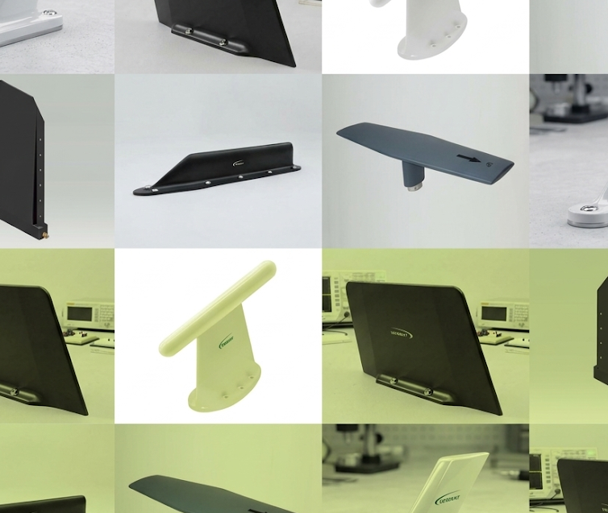
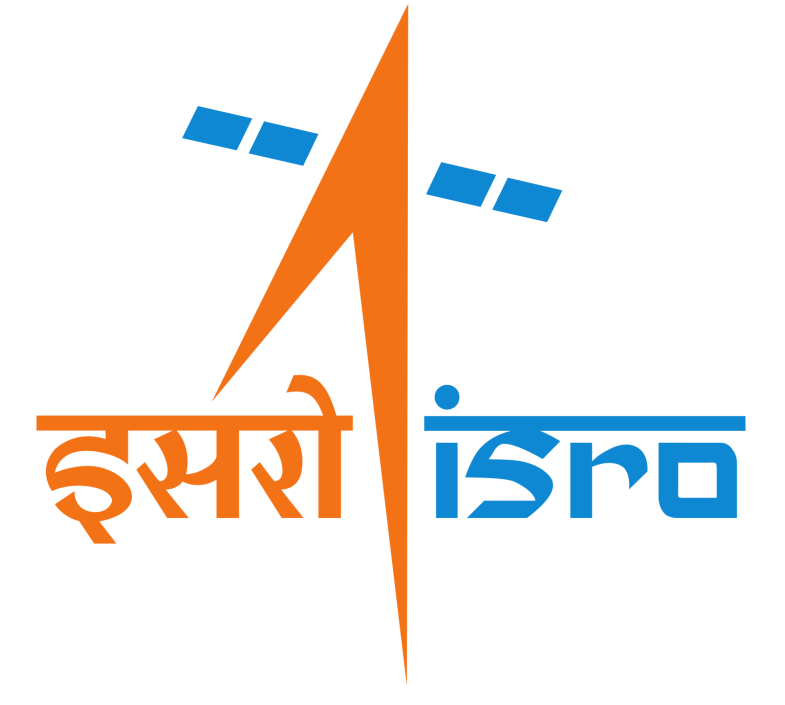
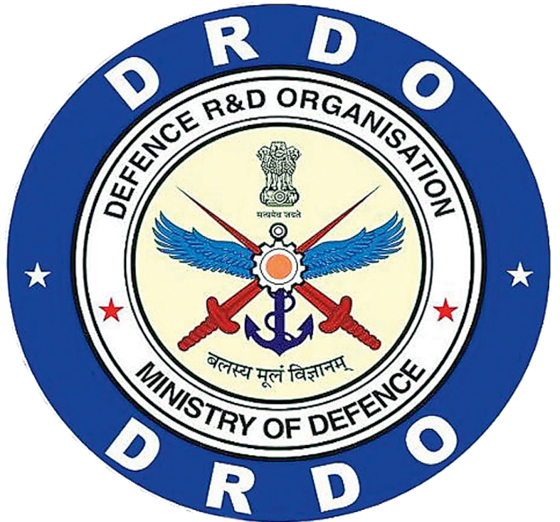
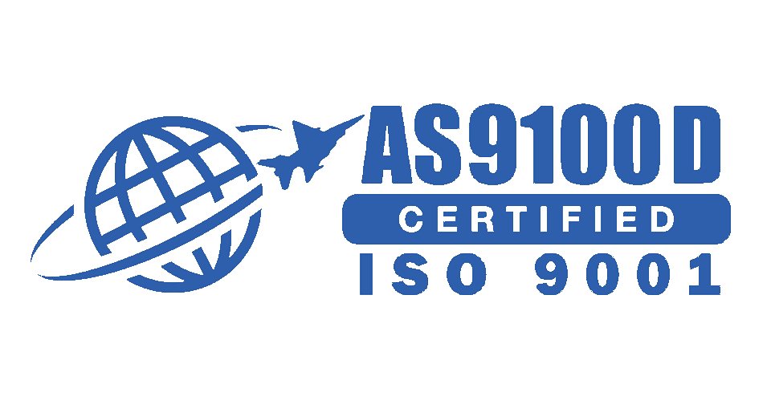
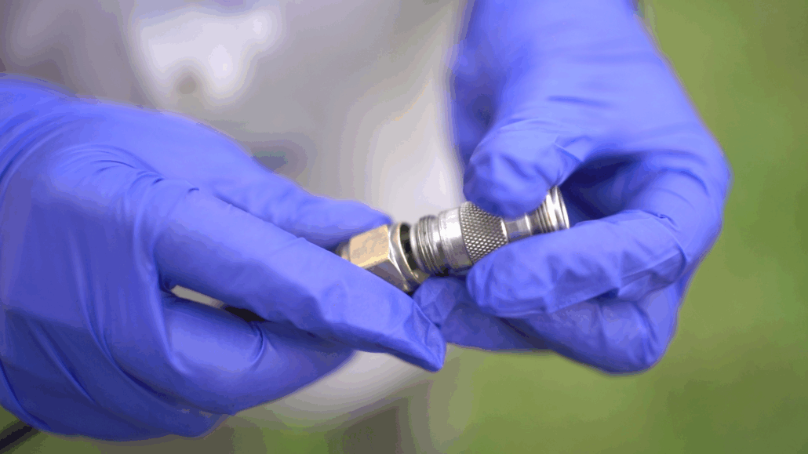
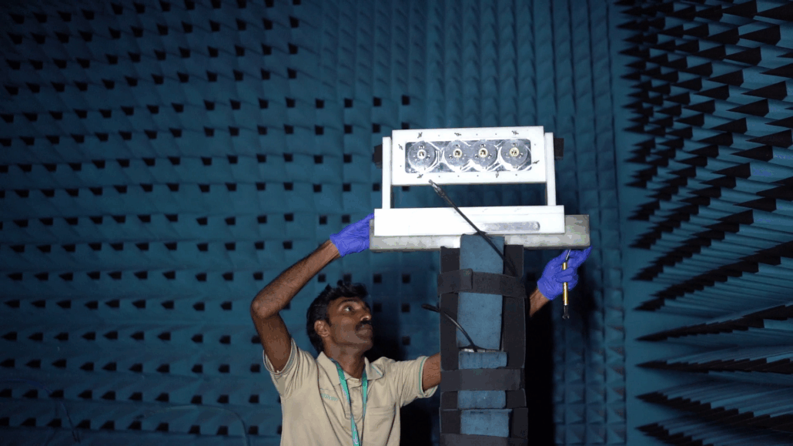
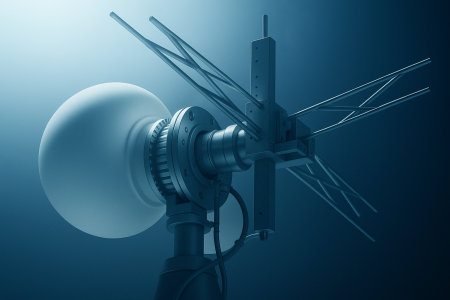
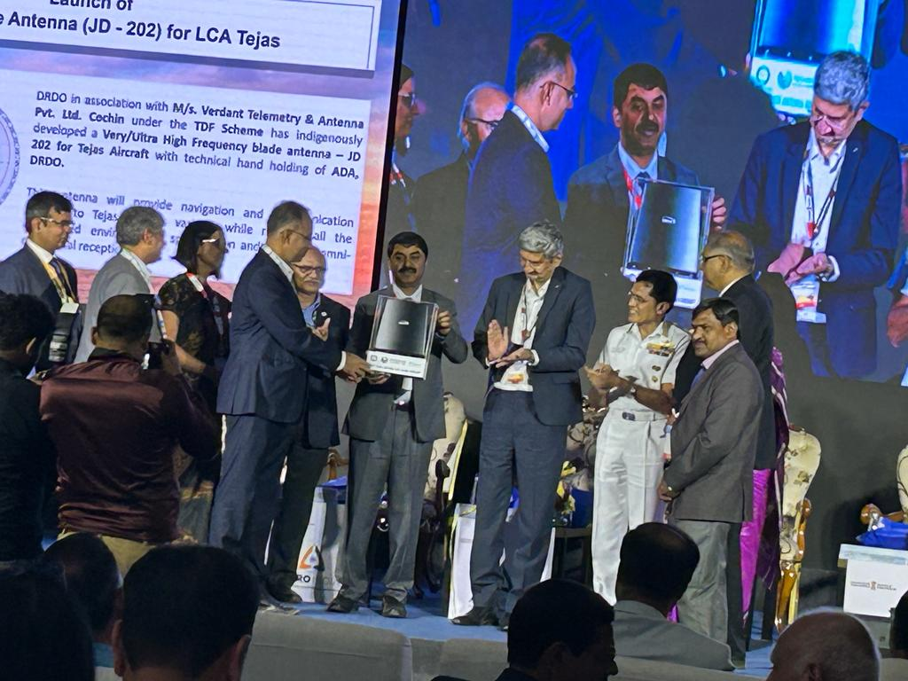

01Airborne Antennas & Radomes
Aerodynamically refined, frequency-precise systems engineered for dependable performance across demanding flight profiles.
Discover capabilityVerdant Telemetry & Antenna Systems Pvt. Ltd.
Explore our capabilitiesTrusted to deliver for India’s most critical programs

ISRO
DRDO
From first principles to final validation, our multidisciplinary teams solve the RF challenges that stand between a platform and its mission.

01Aerodynamically refined, frequency-precise systems engineered for dependable performance across demanding flight profiles.
Discover capability
02Bespoke RF and composite solutions created around unique platform, envelope, weight, and mission constraints.
Discover capability
03End-to-end quality control with an in-house anechoic chamber up to 20 GHz and dedicated ground plane facilities.
Discover capability
In an industry where every gram and gigahertz matters, our commitment to innovation and quality keeps our partners ahead of the curve.
We unite deep domain knowledge with tightly controlled design, manufacturing, and testing—giving aerospace teams a single, accountable partner from concept to deployment.
Meet Verdant TelemetryA specialist antenna company built on RF engineering rigor.
SIATI Award for Excellence in Aerospace Indigenization.
Development programs for ultra-supersonic platforms.
Expanded capability for the next generation of aerospace.
Our antenna systems help aircraft, vessels, and tactical platforms remain connected in environments where failure is not an option.
Milestones, media coverage, and technical milestones from our R&D labs and national test programs.

News & MediaVerdant received the SIATI award for excellence in aerospace indigenisation on the 2nd of December, 2016. Verdant was the sole recipient of the award in this category...
Read moreBring us your platform constraints, mission requirements, and most complex RF challenges.
Partner with us